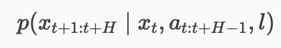
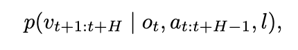
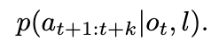
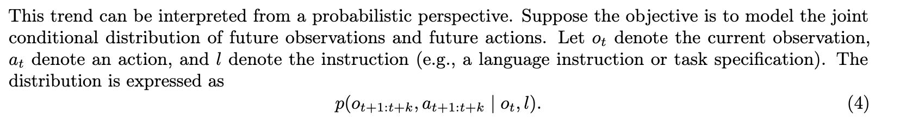

World Model 01
世界模型到底建模什么
这篇先把最容易混在一起的几个词拆开：World Model、Video Generation Model、 Robot Policy、Passive World Model、Controllable World Model 和 IDM。
从一句定义开始
Survey 里最稳的定义是：世界模型是环境如何在动作下演化的预测性表示。关键不是“能不能生成视频”， 而是预测结果是否能帮助机器人选动作、做规划、做评估或生成数据。


四个对象不要混
Policy 输出动作，World Model 预测动作后果，Video Generation Model 生成未来视觉，IDM 从未来反推动作。 它们可以被塞进同一个大模型，也可以拆成多个模块，但接口问题始终存在。



代码视角
最小接口可以写成一个条件动力学模型。输出可以是像素、latent、结构化状态或 value， 但动作必须以某种形式进入模型，否则它只是被动视频预测。
def world_model(obs_t, action_t, instruction=None):
context = encode_observation(obs_t, instruction)
action = encode_action(action_t)
future_state = dynamics(context, action)
return decode_for_task(future_state)
def policy(obs_t, instruction):
action_t = action_head(encode_observation(obs_t, instruction))
return action_t实现重点
- 先决定预测对象：RGB future、latent embedding、object state、trajectory、reward/value 对训练成本影响很大。
- 动作可以是条件输入，也可以是模型输出，还可以像 Cosmos Policy 那样被编码成潜在帧。
- 如果要用于闭环控制，评估指标不能只看未来帧逼真度，还要看 action consistency 和延迟。


Insight
世界模型的价值不在“画出未来”，而在“把未来变成可用的控制变量”。如果未来表示不能改变动作选择， 它对机器人来说就只是昂贵的可视化。